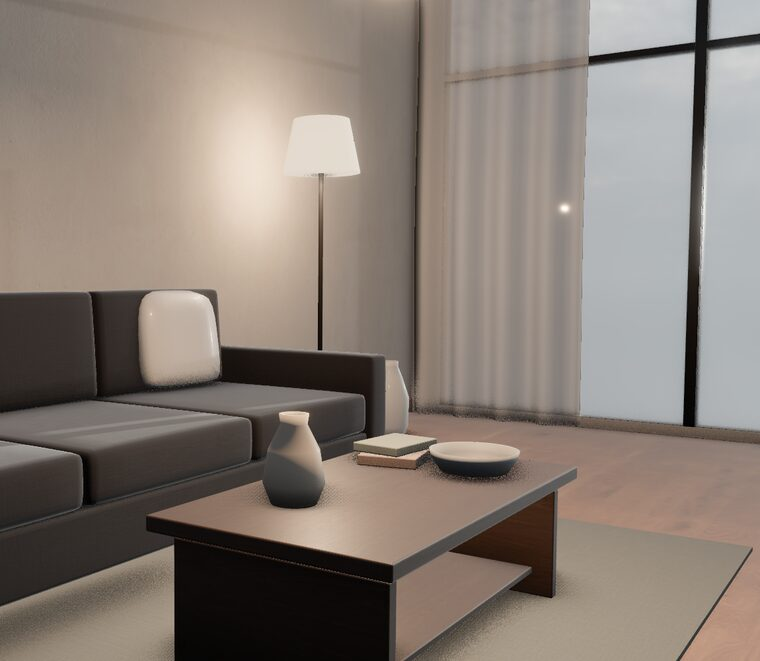
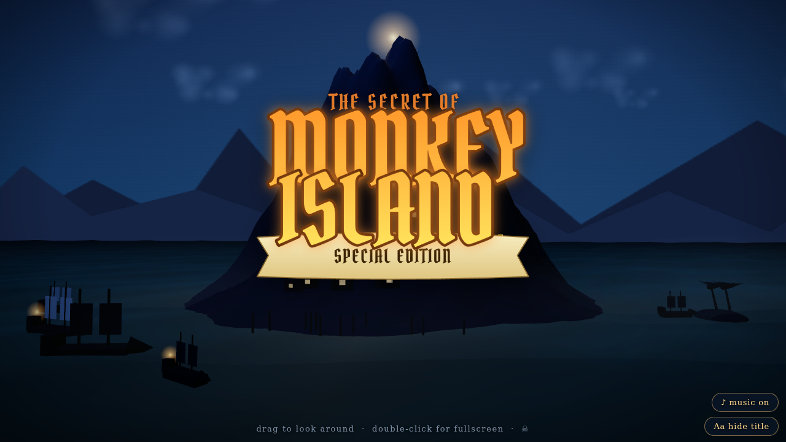
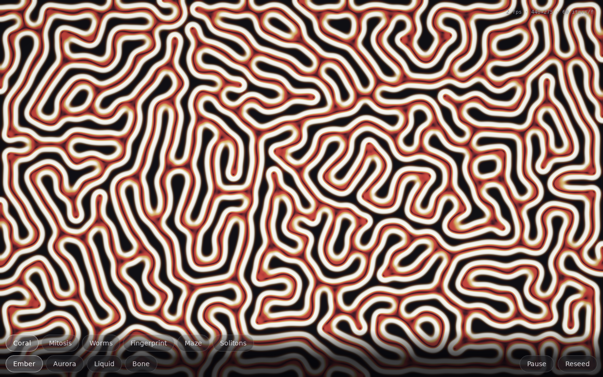
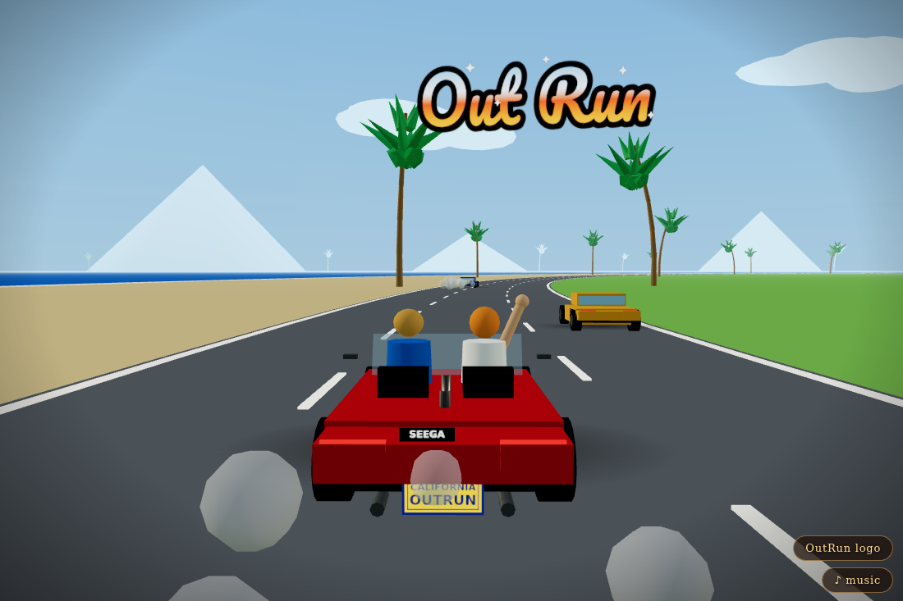

Browser experiments — one repo, many examples.

Blender-exported living room rendered with WebGPURenderer at 160 fps: AgX tone mapping matched to the Cycles look, same Poly Haven HDRI, GTAO + bloom, orbit controls and light sliders. Heavy (~50 MB download).

The Special Edition intro rebuilt live: moonlit island, lantern-lit sloops and the glowing logo, with the “Main Title Theme” synthesized note-for-note from inline FM score data. Click to start, drag to orbit. One HTML file, no assets.
Null geodesics of the Schwarzschild metric integrated per pixel: light bends, the accretion disk Doppler-beams one side to a blazing hot spot, the far side wraps over and under the shadow, and a photon ring glints at the edge. Sliders to turn lensing/Doppler off and see the physics work.

Two chemicals diffuse and react across a GPU texture; four lines of Gray-Scott math grow coral, dividing cells, worms and mazes. Drag to paint life, six regime presets, four palettes — and it finds 60 fps on phones all by itself. One HTML file, zero assets.

The classic SEGA arcade poster as an animated Three.js scene — cars, coast road, sunset logo, and “Splash Wave” synthesized note-for-note from the arcade FM data. One HTML file, zero assets.
Drop a new demo into examples/<name>/ — static HTML is served
as-is; anything with a package.json is built by CI and served from its dist/.